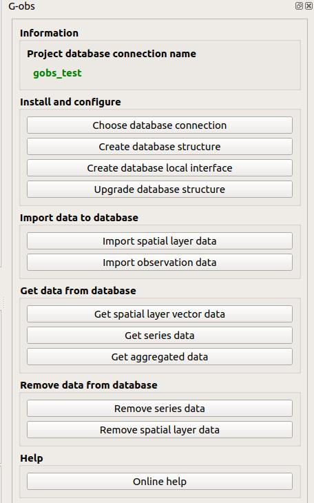

Introduction
G-Obs is a set of tools to store and manage spatial and time data in a standardized way.
To use it, you need to:
- install QGIS Desktop
- install the plugin G-Obs for QGIS
- add a connection to a PostgreSQL database with PostGIS extension
- install the G-Obs database structure on this PostgreSQL database
Get QGIS Desktop
The administrator must use the QGIS desktop software, version 3.4.x or above, to edit these needed metadata.
You can download QGIS in the official download page
Install G-Obs plugin
At present, G-Obs is not yet in QGIS official plugin repository. To install the plugin, you need to:
- open QGIS Plugin manager (menu Plugins)
- in the Parameters tab, add a new plugin repository name G-Obs with the URL: https://github.com/3liz/qgis-gobs-plugin/releases/latest/download/plugins.xml

- In the All tab, search for the word
obsand install the G-Obs plugin.
After a successfull installation, you should see a new dock called G-Obs

For further details, you can have a look at 3liz documentation web page.
Add a connection to the PostgreSQL database
G-Obs stores all the data in a PostgreSQL database, with the PostGIS extension installed (to manage spatial data).
You need to have access to a PostgreSQL database, with enough rights to create a database schema and tables inside this schema.
In QGIS, use the Datasource manager under the Layer menu to create a new PostgreSQL connection:
- Activate the PostgreSQL tab (elephant icon)
- Click on the New button
- In the creation dialog, fill the needed information, and use the Test connection button to make sure the credentials are ok.
We advise to:
- use a service connection instead of the basic authentication. See QGIS documentation
- check the boxes
Use estimated table metadataandAlso list tables with no geometry
Once your connection is set up, you can create the G-Obs database structure in your PostgreSQL database
Configure the G-Obs plugin
This algorithm will allow to configure G-Obs extension for the current QGIS project.
You must run this script before any other script.
Parameters:
PostgreSQL connection to G-Obs database: name of the database connection you would like to use for the current QGIS project. This connection will be used for the other algorithms.

Create the G-Obs database structure
Install the G-Obs database structure with tables and function on the chosen database connection.
This script will add a gobs schema with needed tables and functions.
Parameters:
PostgreSQL connection to G-Obs database: name of the database connection you would like to use for the installation.
Upgrade database structure
Upgrade the G-Obs tables and functions in the chosen database.
If you have upgraded your QGIS G-Obs plugin, you can run this script to upgrade your database to the new plugin version.
Parameters:
PostgreSQL connection to G-Obs database: name of the database connection you would like to use for the upgrade.